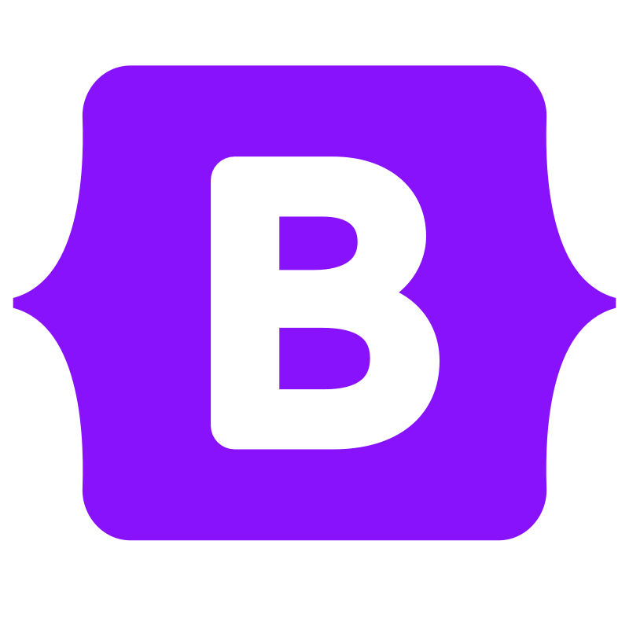
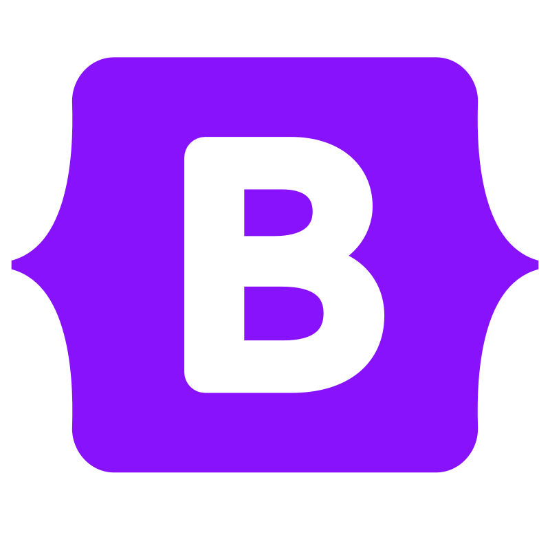

Alexandre Oursel
Développeur de sites web
“ Un site vitrine n'est pas seulement une présence sur internet, c'est votre chance de briller, d'attirer votre audience et de séduire les visiteurs pour les fidéliser.”
Me contacter Voir mon CV
À propos
Je m'appelle Alexandre Oursel et je suis développeur web
L'univers de l'informatique, un domaine omniprésent et en constante évolution, a captivé mon intérêt depuis près d'une décennie. J'ai toujours voulu percer le mystère de la création de sites web et d'applications. Mon voyage a débuté avec un BTS SIO option SLAM, où j'ai eu l'opportunité d'acquérir les bases de la programmation.
Après deux enrichissantes années d'études, j'ai choisi de me spécialiser davantage en poursuivant une licence professionnelle axée sur le développement d'applications mobiles natives. Bien que cette expérience ait été gratifiante, mon cœur penchait vers le développement web, et plus particulièrement vers le front-end, bien que je sois à l'aise en tant que développeur full stack.
C'est pourquoi j'ai entrepris une nouvelle licence, cette fois plus polyvalente, me permettant d'explorer non seulement le développement mobile, mais aussi le développement web et logiciel. Actuellement, je me trouve dans ma quatrième année d'études en informatique, spécialisé dans le développement web. Mon objectif est de mener à bien ces deux dernières années et d'obtenir mon diplôme de Master pour devenir un développeur web accompli.
Comme évoqué précédemment, ma préférence pour le développement web front-end m'a conduit à proposer mes services dans la conceptualisation et la refonte de sites vitrines. Mon parcours académique et ma passion pour la technologie me permettent d'apporter une expertise solide dans la création d'expériences web convaincantes et innovantes.
Je suis toujours à l'affût des dernières tendances et technologies pour offrir à mes clients des solutions de pointe. Je suis enthousiaste à l'idée de collaborer avec vous pour concrétiser vos projets web. N'hésitez pas à me contacter pour discuter de vos idées et besoins. Je suis prêt à mettre en œuvre mon expertise pour vous aider à atteindre vos objectifs en matière de développement web.
Les langages et outils que je maîtrise pour le développement de sites web
Langages


Outils


 


Services
Création de sites vitrines
Vous souhaitez mieux faire connaître votre profil ou votre activité ? Optez dès maintenant pour un site vitrine professionnel sur mesure qui répondra à toutes vos attentes.
Je mets à votre disposition mon expertise pour concevoir des sites web
personnalisés qui reflètent votre identité, votre style et les objectifs de
votre entreprise.
Que vous soyez un travailleur indépendant, une petite
entreprise ou un entrepreneur, je vous propose des solutions web adaptées à
vos besoins.
Consultation : Nous commencerons par discuter de vos
besoins, vos objectifs et vos préférences.
Cela me permettra de cerner
vos attentes et de concevoir un plan sur mesure.
Conception et Développement : Je passerai à la phase de conception et de développement en utilisant les outils adaptés à votre demande.
Révision et Approbation : Je vous présenterai le site pour que vous puissiez y suggérer des modifications si nécessaire.
Hébergement : Une fois que vous êtes satisfait, je vous accompagnerai dans l'hébergement de votre site pour le rendre accessible à tous.
Refonte de sites vitrines
Votre site web est toujours au goût du jour ? Offrez une nouvelle vie à votre présence en ligne.
Je peux vous aider à transformer un site web obsolète en une
plateforme moderne.
Cela peut concerner le design, l'optimisation des
fonctionnalités ou encore améliorer la convivialité de votre site.
Évaluation Initiale : Nous évaluerons votre site actuel pour identifier les points faibles et ce qui peut être amélioré.
Conception et Développement : Je réaliserai un nouveau design et/ou je développerai les fonctionnalités nécessaires pour la refonte de votre site.
Mise à jour : Une fois la nouvelle version validée, je vous accompagnerai dans la mise à jour de votre site.
Référencement
Avoir un site c'est bien, faire en sorte qu'il soit visible c'est encore mieux ! Le référencement est aujourd'hui essentiel pour tout site web, car il permet d'assurer sa visibilité et son succès en ligne.
Je peux faire en sorte que votre site soit mieux classé dans les navigateurs internet (Chrome, Edge, Firefox...) en exploitant des algorithmes de recherche, en optimisant les mots-clés et la structure du site ainsi que la vitesse de chargement des pages.
Analyse Technique : Nous effectuerons une analyse des données relatives au trafic, aux performances des mots-clés, et de la structure du site.
Conception et Développement : Je vous propose des améliorations techniques, telles que l'optimisation des performances, de la structure et la correction des problèmes d'indexation.
Mise à jour : Après la publication de la nouvelle version, nous constaterons ensemble l'évolution de votre site.
Conception de Maquettes
Vous souhaitez donner vie à un projet et transformez vos idées en réalité ? La conception de prototypes sous forme de maquettes vous offre la possibilité de visualiser et de valider votre site web avant même de débuter sa création.
Si vous n'avez pas encore de maquette, je peux conceptualiser un apperçu de votre futur site web. Les maquettes vous permettront de voir à quoi ressemblera votre site, d'ajuster les détails, et d'assurer que tous les éléments visuels et fonctionnels correspondent à vos attentes.
Consultation : Nous discuterons de vos idées, de vos besoins et de vos objectifs pour la création des maquettes.
Conception : je m'occuperai des maquettes visuelles de votre site web, en tenant compte de l'architecture, du design et de la navigation.
Révision : Nous analyserons les maquettes, et vous pourrez apporter des ajustements si necessaire.